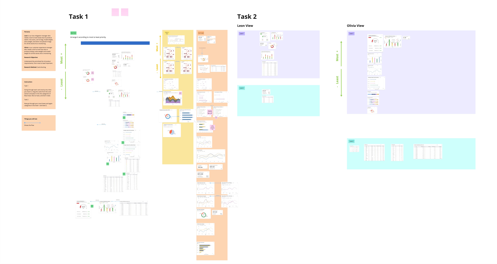
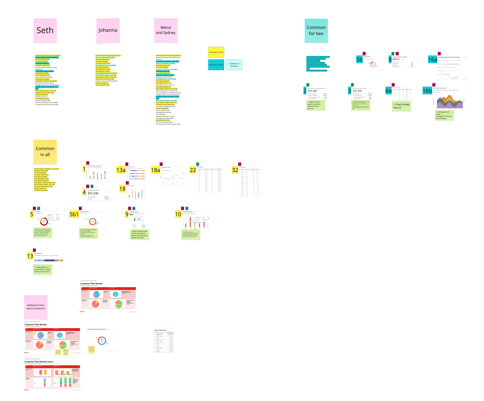

Security Suite

In the fall of 2023, the company started a new software that we nicknamed internally, "Loss Prevention." The concept was simple and direct: provide our customers a way to track shrink within their stores as it related directly to self-checkout. With the innovation around weight sensitivity within hardware and the up-and-coming AI monitored cameras, there was ample opportunity to track and anticipate customer behavior.
The purpose of this software was to not only prevent theft but to learn and shape pain points that lead to accidental loss. An example of this being a customer accidentally inputting a banana as their product to purchase instead of an organic banana.
So, the data is all there: We use cameras to track customer behavior, shopper assistants to intervene when there are roadblocks or errors, and hardware settings, such as weight sensitivity, to gauge items correctly as the shopping flow commences. The problem is that we needed a platform where we could translate all this data into an easy-to-read reporting experience that allowed for a customer, such as Wegmans or Harris Teeter, to digest and anticipate behavior that ultimately leads to a more seamless checkout experience with decreased shrink.
.jpg)

Because of my experience with Administrator UI and my existing Design System for web-based products within the company, I was brought on as an assistant designer in this project. We used existing personas — Leon the Loss Prevention Manager and Olivia the Operations Manager — as primary users of what would be known as Security Suite. For the first several weeks, I assisted in many iterations around information architecture, as well as the creation of Celia the Customer Success persona.
About six months into this design process, the lead designer left the company. They'd successfully curated flows around each persona experience and tons of beautiful charts — the problem was, now they were gone. And although there were several concepts, no concrete designs were ready for developer handoff.
The clear first step was to get material over to developers for what we called "Phase One"; a reporting-based platform with a dashboard UI home page and baseline architecture. I had to quickly catch up with the product and business analyst team to understand what our customer wanted — we couldn't load a dashboard with 50 different charts and call it a day. Every component needed to have value and intention.
I needed to overcome my own learning curve in catching up to where the project was, learning terminologies (there was practically a library of content) and understanding what had and hadn't already been planned for. There was no time to waste.


Once my brain had (somewhat) successfully wrapped itself around the product, I narrowed down the charts to our top choices. This was based on a few things:
Answering these questions allowed me to select the strongest charts and reduce repetitive and unhelpful data. I hosted research workshops with the support of the product team to finalize the dashboard content. We also shared a prototype with a customer that asked the question head-on: How important is this content to the work you are trying to do? Ranking the charts from 1–5 allowed us to quickly prioritize what content was the most important.
We ran a card sorting exercise to figure out how users mentally grouped the dashboard content. Task 1 had participants organize all the charts and data points into categories that made sense to them. Task 2 tested whether the Leon (Loss Prevention) and Olivia (Operations) persona views actually mapped to how real users thought about the data.


The analysis pulled together results from each participant and identified which charts were common across all of them, which showed up for two out of three, and which were unique to individual participants. This gave us a clear, data-backed picture of what belonged on the dashboard and what could be cut or moved to a secondary view.
We needed two main perspectives within chart content.
Data should be split between Loss Prevention data and Produce Recognition data.
Some charts were gorgeous, but lacked meaningful information.
You hate to see them go, but cutting these types of charts made our dashboard more efficient and clear.
Data that seemed absolutely critical to the product team was less important to the customer.
It's always interesting when this kind of thing happens. Of course, we'd need to run the test by more customers, but the debate around which charts got the most real-estate on the page waged on.